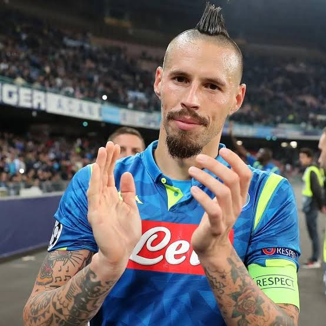
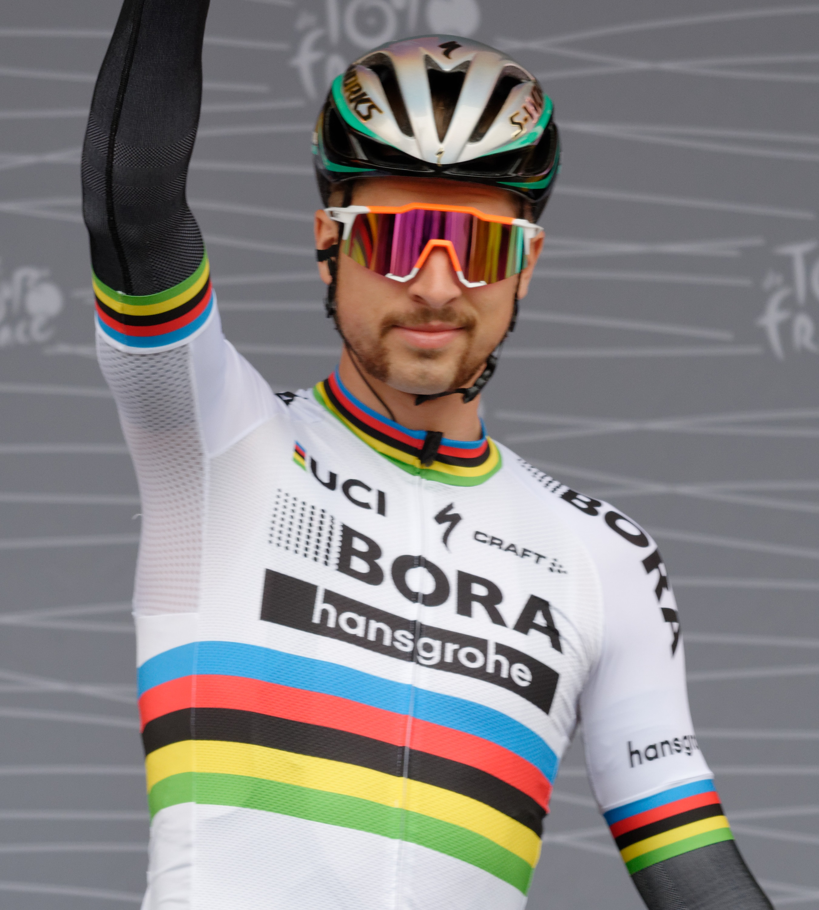
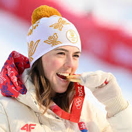
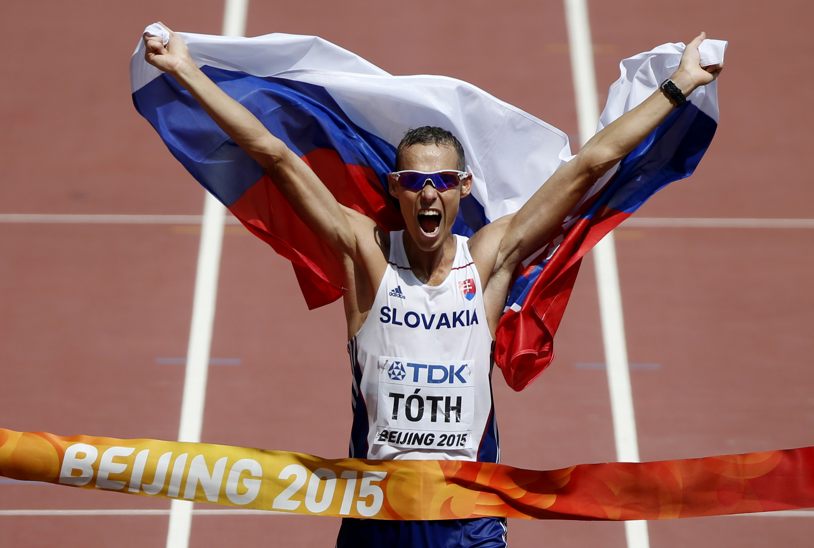
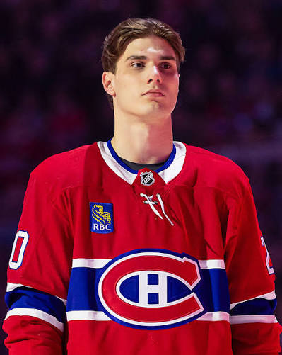

Marek Hamšík

Peter Sagan

Ema Zapletalová

Petra Vlhová

Matej Toth

Tu nájdeš zopár slovenských športovcov a základné fakty o nich.





Narodil sa 27. júla 1987 v Banskej Bystrici.
Dlhé roky hrával za taliansky klub SSC Neapol.
Je jedným z najlepších slovenských futbalistov.
Narodil sa 10. februára 1983 v Nitre.
V roku 2016 získal zlatú olympijskú medailu v chôdzi na 50 km.
V roku 2015 sa stal majstrom sveta v chôdzi.
Narodil sa 30. marca 2004 v Košiciach.
V roku 2022 získal bronzovú medailu na olympiáde v Pekingu.
V roku 2022 sa stal jednotkou draftu NHL.
Narodil sa 26. januára 1990 v Žiline.
Je trojnásobným majstrom sveta v cestnej cyklistike.
Na Tour de France získal sedemkrát zelený dres.
Narodila sa 13. júna 1995 v Liptovskom Mikuláši.
V roku 2022 získala olympijské zlato v slalome.
V sezóne 2020/2021 vyhrala celkové hodnotenie Svetového pohára.
Narodila sa 24. marca 2000 v Nitre.
Špecializuje sa na beh na 400 metrov cez prekážky.
V roku 2025 získala bronzovú medailu na majstrovstvách sveta v Tokiu.